Programming
We have already introduced programming in the document . Defining functions is fundamental to programming in Matlab. We must admit that this document illustrates only a tiny fraction of what can be done with Matlab. We hope to add more examples in the (near) future.
The function presented in the section is not used for number crunching but it is a very useful tool to carry out our regular academic tasks.
Iterative Mappings
The plain version of Matlab does not have functions to execute iterative methods. Therefore, the user has to program Matlab to execute iterative methods. The following example will illustrate how this could be done for the fixed point method. The approach is similar for other iterative methods.
Example: We consider the equation \(\displaystyle p(x) = -x^{5/2}/8 - 5x/4 + 1/2 = 0\). Since \(p\) is a continuous function, \(p(0) = 1/2 > 0\) and \(p(1) = -7/8 < 0\), it follows from the intermediate value theorem that there exists at least one solution of this equation in the interval \([0,1]\).
We have that \(p(x) = 0 \iff g(x) = -x^{5/2}/8 - x/4 + 1/2 = x \). Thus, the solutions of \(p(x) = 0\) are the fixed points of \(g\) and vice-versa. Since \( 1/8 \leq g(x) \leq 1/2 \) and \(|g'(x)| = |-5x^{3/2}/16 - 1/4| \leq 9/16 < 1 \) for \(0 \leq x \leq 1\), we get from the fixed point theorem that there exists a unique fixed point of \(g\) in \([0,1]\) and that the sequence \(x_0, x_1 = g(x_0), x_2 = g(x_1), \ldots, x_{n+1} = g(x_n), \ldots \) converges to this fixed point whatever the initial value \(x_0 \in [0,1]\). Therefore, we find the solution of \(p(x) = 0\) in the interval \([0,1]\) by finding the fixed point of \(g\) in that interval.
We start the iterations with \(x_0 = 0.5\) and use \(x_{20}\) as an approximation of the solution. The following Matlab code, that is found in the m-file , does all that work for us.
% Starting value of x for the iteration. x = 0.5;
% Number of iterations. n = 20;
% loop. for i = 1:n x = -x.^(5/2)/8 - x/4 + 1/2; end
% Return the final value of the iteration. x
It is not a function but only a simple script that Matlab can execute. If we run fxpt1 in Matlab, then it computes \(20\) iterations of the function \(g\) starting with \(x = 0.5\) and return the \(\displaystyle 20^{th}\) iteration.
>> format short, fxpt1
x = 0.3905
However, the script above is not convenient because we have to modify the file fxpt1.m each time that the function to be iterated, the initial value or the number of iterations are modified.
Given the name (between apostrophes) or handle funct of a function, an initial value x0 and a number of iterations n, the function fxpt2 defined in the m-file compute the first n iterations of the function associated to funct starting with the initial value x0.
% x = fxpt2(funct,x0,n)
%
% This function returns the result of n iterations of the function
% funct starting with the value x = x0 .
function x = fxpt2(funct,x0,n)
x = x0;
for i=1:n
x = feval(funct,x);
end
end
Example (continued): To execute \(20\) iterations of the function \(g\) starting with \(x = 0.5\), we first define the function \(g\) in Matlab and then use the function fxp2 with the arguments g, 0 and 20.
>> g = @(x) -x.^(5/2)/8 - x/4 + 1/2; ... fxpt2(g,0.5,20)
ans = 0.3905
Note: If we use the line x = funct(x); instead of the line x = feval(funct,x); in the code for the function fxpt2, then the function fxpt2 will only accept function handles as its first argument. By using the function feval(), function names (between apostrophes) can also be given as first argument of the function fxpt2.
Vector Fields
We consider a system of autonomous ODE of the form
\[ \vec{x}'(t) = f(\vec{x}(t),p) \] where \(\vec{x} \in \mathbb{R}^2\) and \(p \in \mathbf{R}^m\) is a vector of parameters (possibly empty) for the function \(f\).As we have promised in the example about the van der Pol equation in the document , we now provide a function to draw vector fields that offers an alternative to the function quiver. We have called it vctfld. This function offers the option to draw the vector field such that the vector drawn from a point \(\vec{x}\) is proportional to the normalized vector \(\displaystyle \|f(\vec{x}\|^{-1} f(\vec{x})\). We will illustrate the usefulness of this option with the example for the van der Pol equation below. It is also possible to use the function vctfld to draw orbits over the vector fields.
Matlab does not have a simple function to draw arrows. We have created our own little function to draw arrows. We call it plotArrow. The code for this function is found in the m-file . This file can download by clicking with the right button of the mouse on the previous link and then selecting Save link as ... → Save file. This function does not draw very fancy arrows but the arrows that it draws are perfectly sufficient for drawing vector fields. The code for this function is not very sophisticated and is self explanatory.
The code of the function vctfld displayed below is found in the m-file which can be downloaded by clicking on the previous link as explained above. This function uses the cell array varargin to handle a variable number of arguments as built-in Matlab functions do.
The following points should be taken into consideration when using vctfld.
- To take advantage of the Matlab optimization for array smart functions, the Matlab representation of the function \(f\) must be in the format [ f1(X1,X2,p) ; f2(X1,X2,p) ]. The expression funct can be the name of this function (between apostrophes), the handle of this function or a literal expression of the form above (between apostrophes).
- The vector field is drawn only in the region of the plane delimited by B(1) < X1 < B(2) and B(3) < X2 < B(4).
- The value of scaled determines if the vector drawn from a point \(\vec{x}\) is proportional to \(f(\vec{x},p)\) or \(\displaystyle \|f(\vec{x},p)\|^{-1}f(\vec{x},p)\). We have that scaled = 0 (default) in the first case and scaled = 1 in the second case.
- The optional argument init_conds is a \( 2 \times k\) matrix where each column is a vector \(\vec{x}_0\). The orbit \( \{ \vec{x}(t) : -t_f < t < t_f \text{ with } \vec{x}(0) = \vec{x}_0 \} \) is drawn for each \(\vec{x}_0\) given in init_conds. The parts of an orbit outside the region defined by B are not drawn. Moreover, the parts of an orbit associated to \( t > t_f \) or \( t < -t_f \) are not drawn even if they may be inside the region defined by B. This shows that the results from a numerical visualization must always be interpreted with extreme caution.
% vctfld(funct,B,p,options)
%
% Function to draw the vector field of a system of ODE of the form
% dX/dt = f(X1,X2,p)
% with X = (X1,X2) in R^2.
%
% funct is the function that defines the right hand side of the system
% of ODE. This function must be in the format
% f:(X1,X2,p) -> [ f1(X1,X2,p) ; f2(X1,X2,p) ]
% where the functions f1 and f2 are array smart.
% funct can be the name of a function (between apostrophes),
% the handle of a function or an expression of the form
% '[... ; ...]'. In this last case, the variable names
% must be X1, X2 and p.
% B = [a b c d] provides the limits of the region [a,b] x [c,d] of the plan
% where the vector field is drawn. We must have that a < b and c < b.
% p is a vector of parameters for the function f. If f does
% not depend on any parameter, then p must be defined as [].
%
% List of options:
% 'scaled' is 0 if the vector drawn from a point X is proportional to
% f(X1,X2,p) and scaled is 1 if the vector drawn from a point X is
% proportional to the normalized version of the vector f(X1,X2,p).
% If scaled is not defined, then scaled is set to 0.
% 'density' is a number. There are density x density equally spaced mesh
% points per unit square. If density is not given, then the
% density is set to 3.
% 'init_conds' is a matrix where each column of init_conds is an initial
% condition for dX/dt = f(X1, X2, p) at time t=0. An orbit is
% drawn for each initial condition. If init_conds is
% not given, then no orbit is drawn.
% 'tf' is used to determine the length of the interval of
% integration. The interval of integration is ]-tf , tf[.
% The value should be modify according to the velocity of the
% vector field. If tf is not given, then tf is set to 20.
% The list of options accepted by odeset can also be used.
% odeset('RelTol',1e-6,'AbsTol',[1e-5 1e-5]) is used by default.
%
% The Matlab solver used is ODE45.
%
function vctfld(funct,B,p,varargin)
if ( nargin < 3 )
disp('Not enough arguments, use help vctfld to get the instructions.');
return;
end
% Default values
ttlvar = 0;
scaled = 0;
density = 3;
tf = 20;
options = struct();
init_conds = [];
while ( ~isempty(varargin) )
switch lower(varargin{1})
case 'scaled'
scaled = varargin{2};
case 'density'
density = varargin{2};
case 'tf'
tf = varargin{2};
case 'init_conds'
init_conds = varargin{2};
otherwise
disp("Assuming that "+varargin{1}+" is an option for odeset.");
options = odeset(options,varargin{1},varargin{2});
end
varargin = varargin(3:length(varargin));
end
if ( isa(funct,'function_handle') )
f = funct;
if ( exist(func2str(funct), 'file') ~= 2 && ...
exist(func2str(funct), 'builtin') ~= 5 )
ttlvar = 1;
end
elseif ( exist(funct, 'file') == 2 || exist(funct, 'builtin') == 5 )
f = str2func(funct);
elseif ( ischar(funct) == 1 )
f = str2func(['@(X1,X2,p)',funct]);
ttlvar = 1;
else
disp('The vector field cannot be drawn. Either the argument is not ');
disp('the name or handle of an existing function, or it is not the ');
disp('description of a function.');
return;
end
% We select the mesh points.
spacing = 1/density;
X1min = B(1) + spacing;
X1max = B(2) - spacing;
if ( X1max < X1min )
disp('The X1 interval is too small for the selected density.')
return;
end
mesh_X1 = X1min:spacing:X1max;
X2min = B(3) + spacing;
X2max = B(4) - spacing;
if ( X2max < X2min )
disp('The X2 interval is too small for the selected density.')
return;
end
mesh_X2 = X2min:spacing:X2max;
size_X1 = length(mesh_X1);
size_X2 = length(mesh_X2);
% We create the figure.
cla;
hold on;
grid on;
if ( ttlvar == 1 )
title(['X'' = ',func2str(f)]);
else
title(['X'' = ',func2str(f),'(X1,X2,p)']);
end
xlabel('X1');
ylabel('X2');
axis([B(1) B(2) B(3), B(4)],'equal');
% We compute the vector f(X1,X2,p) at each mesh point.
[XX1,XX2] = meshgrid(mesh_X1,mesh_X2);
M = f(XX1,XX2,p);
M1 = M(1:size_X2,:);
M2 = M(size_X2+1:2*size_X2,:);
% We draw the vector field.
if ( scaled == 1 )
% The vector f(X1,X2,p) is normalized. It is also scaled by
% spacing before being drawn at (X1,X2) to avoid overlapping
% vectors.
for (i=1:size_X1)
for (j=1:size_X2)
N = norm([M1(j,i),M2(j,i)]);
if ( N > 0 )
Dir = spacing*[M1(j,i),M2(j,i)]/N;
else
Dir = [0,0];
end
Xs = [XX1(j,i),XX2(j,i)];
Xe = [XX1(j,i),XX2(j,i)] + Dir;
plotArrow(Xs,Xe,'scale',1/2,'theta',20,'Color','blue');
end
end
else
% We compute the norm of the vector at all the mesh points.
% The maximum of these norms is used to scale the vector
% f(X1,X2,p). The resulting vector is also scaled by
% spacing before being drawn at (X1,X2) to avoid overlapping
% vectors.
MaxN = max(max(sqrt(M1.^2 + M2.^2)));
if ( MaxN == 0 )
disp 'The vector field is null!';
return
end
for (i=1:size_X1)
for (j=1:size_X2)
Dir = spacing*[M1(j,i),M2(j,i)]/MaxN;
Xs = [XX1(j,i),XX2(j,i)];
Xe = [XX1(j,i),XX2(j,i)] + Dir;
plotArrow(Xs,Xe,'scale',1/2,'theta',20, 'Color','blue');
end
end
end
% We draw some orbits if requested.
F = @(t,X) f(X(1),X(2),p);
if ( size(init_conds,2) > 0 )
if ( length(fieldnames(options)) == 0 )
options = odeset('RelTol',1e-6,'AbsTol',[1e-6 1e-6]);
end
for i = 1:size(init_conds,2)
X0 = [init_conds(1,i);init_conds(2,i)];
t0 = 0;
for n = 0:1
[T,X] = ode45(F,[t0 tf], X0, options);
plot(X(:,1),X(:,2),'k')
tf = - tf;
end
end
end
end
Example (continued): Recall that the van der Pol equation can be reduced to the following system of autonomous first order ODE.
\[ \begin{split} x_1'(t) &= x_2(t) \\ x_2'(t) &= \mu (1-x_1(t)^2) x_2(t) - x_1(t) \end{split} \]To be able to use our new function vctfld to draw the vector field, we first express the function on the right hand side of this system of ODE in the required format and associate it to the handle funct.
>> funct = @(X1,X2,p) [ X2 ; p(1)*(1-X1.^2).*X2 - X1 ];
As for the other arguments of the function vctfld, we set B = [-3 4 -3 3] and p = [1/2] as we have done in the previous example about the van der Pol equation. We also set scaled = 1 to draw a vector proportional to the normalized version of the vector funct(X1,X2,p) at each mesh point (X1,X2), init_conds = [ 1 3 ; 1 1] to plot the orbits through \( (1,1) \) and \( (3,1) \) respectively, and density = 4 to get \(4 \times 4\) equally spaced mesh points per unit square. We assume the default values for all the other arguments.
>> vctfld(funct,[-3 4 -3 3],[1/2],'scaled',1,'density', 4,'init_conds',[ 1 3 ; 1 1]);

In addition to the figure, we also get a warning message after the previous command. We get this message because the computations to obtain the orbit through \( (3,1) \) generates values outside the computational limits for \( t < -1.58\ldots \). We should also note that the system of ODE is stiff. For stiff systems of ODE, it is generally preferable to use the Matlab solvers ODE15s or ODE23s. However, for the present example, the warning message still appears because of our large time interval used to plot a part of the orbit through \( (3,1) \).
We repeat the previous command but this time with
scaled = 0 instead of
scaled = 1 to draw a vector proportional
to funct(X1,X2,p) at each mesh point
(X1,X2). We get vectors whose length
represent the velocity of the flow
at their base
points.
>> vctfld(funct,[-3 4 -3 3],[1/2],'scaled',1,'density', 4,'init_conds',[ 1 3 ; 1 1]);

This time, we have the information on the velocity of
the flow
but we have lost all the information about
the direction of the flow
in the neighbourhood of the
origin. In conclusion, both representations of the vector field are needed
to get a more complete picture of the behaviour of the orbits.
Remark: The function vctfld could obviously be improved. For instance, it would be nice if this function was accepting arguments to format the arrows used to draw the vector field and to format the orbits. We leave this project to the interested readers.
Slope Fields
In an introduction to ODE, it would have been normal to
introduce slope fields
before vector fields since the
former is about ODE of the form \(x'(t) = f(t,x(t))\) with
\(x \in \mathbb{R}\) which are studied before the systems of ODE.
However, this document does not pretend to be
an introduction to ODE. Since it is easy to modify the code for the
function vctfld to get a function to
draw slope fields
, we did that.
We remind the reader that a slope field associated to an ODE \(x'(t) = f(t,x(t))\) is generated as it follows. We select many (equally spaced) mesh points \( (t,x) \) in the plane and draw from each of these points \( (t,x) \) a vector in the direction \((1,f(t,x))\). The slope of the line containing this vector is \( f(t,x) \). The tradition is that the vectors drawn all have the same length which is smaller than the smallest distance between the values of \(t\) used to define the mesh points. This last condition is to ensure that the vectors do not overlap.
The function that we have created to draw slope fields is called slpfld. The code of this function is found in the m-file which can be downloaded by clicking on the previous link as explained above.
>> help slpfld
slpfld(funct,B,p,options)
Function to draw the slope field of an ODE of the form
dx/dt = f(t,x,p)
with x in R.
funct is the function that defines the right hand side of the ODE.
This function must be an array smart function.
funct can be the name of a function (between apostrophes),
the handle of a function or an expression of the form
'...'. In this last case, the variable names t, x and p must
be used.
B = [a b c d] provides limits of the region [a,b] x [c,d] of the
t,x plan where the slope field is drawn. We must have that
a < b and c < b.
p is a vector of parameters for the function f. If f does
not depend on any parameter, then p must be defined as [].
List of options:
'density' is a number. There are density x density equally spaced mesh
points per unit square. If density is not given, then the
density is set to 3.
'init_conds' is a vector where each component of init_conds is an initial
condition for dx/dt = f(t,x,p) at time t=0. The graph
of the solution with this initial condition is drawn.
If init_conds is not given, then no graph is drawn.
The list of options accepted by odeset can also be used.
odeset('RelTol',1e-6,'AbsTol',1e-5) is used by default.
The Matlab solver used is ODE45 .
Example: We draw the slope field of the ODE \(x'(t) = p_1\sin(x(t)+t + p_2)\) for \( -5 < t < 5\) and \( -4 < x < 4\), where \(\vec{p} \in \mathbb{R}^2\) is an arbitrary parameter. In particular, we are interested in the case \(\vec{p} = (2,3)\).
>> slpfld('p(1)*sin(x+t+p(2))',[-5 5 -4 4],[2,3],'density',4,'init_conds',[-3 0 3]);

Iterative Function Systems
For an introduction to iterative function systems (IFS), the reader may consult the websites and .
We consider the following three IFS:
Sierpinski triangle: This set is the
\[ \begin{split} &f_1(\vec{x}) = \begin{pmatrix} 1/2 & 0 \\ 0 & 1/2 \end{pmatrix} \vec{x} + \begin{pmatrix} 0 \\ 1/2 \end{pmatrix} \ , \quad f_2(\vec{x}) = \begin{pmatrix} 1/2 & 0 \\ 0 & 1/2 \end{pmatrix} \vec{x} + \begin{pmatrix} 1/2 \\ 0 \end{pmatrix} \ \\ &\text{and} \quad f_3(\vec{x}) = \begin{pmatrix} 1/2 & 0 \\ 0 & 1/2 \end{pmatrix}\vec{x} \ . \end{split} \]fixed point
of the function \( \mathcal{S} = f^c\) associated to the IFS \( \{ f_j\}_{j=1}^3 \) whereRecall that \(\mathcal{S}(X) = \bigcup_{j=1}^3 f_j(X)\).
Fern: This set is the
\[ \begin{split} &f_1(\vec{x}) = \begin{pmatrix} 0 & 0 \\ 0 & 0.16 \end{pmatrix} \vec{x} \ , \quad f_2(\vec{x}) = \begin{pmatrix} 0.85 & 0.04 \\ -0.04 & 0.85 \end{pmatrix} \vec{x} + \begin{pmatrix} 0 \\ 1.6 \end{pmatrix} \ , \\ &f_3(\vec{x}) = \begin{pmatrix} 0.20 & -0.26 \\ 0.23 & 0.22 \end{pmatrix} \vec{x} + \begin{pmatrix} 0 \\ 1.6 \end{pmatrix} \ \text{and} \quad f_4(\vec{x}) = \begin{pmatrix} -0.15 & 0.28 \\ 0.26 & 0.24 \end{pmatrix} \vec{x} + \begin{pmatrix} 0 \\ 0.44 \end{pmatrix} \ . \end{split} \]fixed point
of the function \( \mathcal{F} = f^c\) associated to the IFS \( \{ f_j\}_{j=1}^4 \) whereRecall that \(\displaystyle \mathcal{F}(X) = \bigcup_{j=1}^4 f_j(X)\).
Leaf: This set is the
\[ \begin{split} &f_1(\vec{x}) = \begin{pmatrix} 0.6 & 0 \\ 0 & 0.6 \end{pmatrix} \vec{x}_ + \begin{pmatrix} 0.18 \\ 0.36 \end{pmatrix} \ , \quad f_2(\vec{x}) = \begin{pmatrix} 0.6 & 0 \\ 0 & 0.6 \end{pmatrix} \vec{x} + \begin{pmatrix} 0.18 \\ 0.12 \end{pmatrix} \ , \\ &f_3(\vec{x}) = \begin{pmatrix} 0.4 & 0.3 \\ -0.3 & 0.4 \end{pmatrix} \vec{x} + \begin{pmatrix} 0.27 \\ 0.32 \end{pmatrix} \ \text{and} \quad f_4(\vec{x}) = \begin{pmatrix} 0.4 & -0.3 \\ 0.3 & 0.4 \end{pmatrix} \vec{x} + \begin{pmatrix} 0.27 \\ 0.09 \end{pmatrix} \ . \end{split} \]fixed point
of the function \( \mathcal{L} = f^c\) associated to the IFS \( \{ f_j\}_{j=1}^4 \) whereRecall that \(\displaystyle \mathcal{F}(X) = \bigcup_{j=1}^4 f_j(X)\).
We provide two functions in Matlab to approximate the
fixed point
for each of these IFS.
The first function described below applies strictly
the iterative procedure for each of the IFS. The only
inaccuracies are due to numerical computations. However, this
function cannot compute many iterations before exhausting the computer
memory. We assume that the initial set is a simple set (e.g. a polygonal
curve). After 1 iteration, we have 3 copies of the transformed
initial set. After 2 iterations, we have 32
copies of the transformed initial set. and so on. After 10
iterations, we have already 310 = 59,049 copies of the
transformed initial set. We rapidly reach the full capacity of the computer
memory.
% function ifs(X, N, syst, colour)
%
% X : Initial set, a (2 x n) matrix storing the corners of the
% closed polygonal curve.
% N : The number of iterations.
% syst : It is one of Sierpinski (default), Fern or Leaf
% colour : One of the colours accepted in Matlab plot/fill.
% The default colour is blue.
%
function ifs(X, N, syst, colour)
if ( nargin < 4 )
colour = 'blue';
if ( nargin < 3 )
syst = "Sierpinski";
end
end
if ( strcmpi(syst,"Sierpinski") )
for i=1:N
fprintf('%d ',i)
X = sierpinski(X);
end
elseif ( strcmpi(syst,"Fern") )
for i=1:N
fprintf('%d ',i)
X = fern(X);
end
elseif ( strcmpi(syst,"Leaf") )
for i=1:N
fprintf('%d ',i)
X = leaf(X);
end
else
disp('No knows IFS has been given. Use help IFS for the instructions.');
return;
end
cla;
hold on;
axis off;
% If the function fill() was behaving like the function
% plot() when a point with coordinates NaN is inserted,
% then the following three lines could be used instead of all the
% lines of code below them.
%
% p = fill(X(1,:), X(2,:),'b');
% p.FaceColor = colour;
% p.EdgeColor = colour;
I = find(isnan(X(1,:)));
if ( length(I) == 0 )
p = fill(X(1,:), X(2,:),'b');
set(p,'FaceColor',colour);
set(p,'EdgeColor',colour);
else
i1 = 1;
i2 = I(1)-1;
p = fill(X(1,i1:i2), X(2,i1:i2),'b');
set(p,'FaceColor',colour);
set(p,'EdgeColor',colour);
i1 = I(1)+1;
for i = 2:length(I)
i2 = I(i)-1;
p = fill(X(1,i1:i2), X(2,i1:i2),'b');
set(p,'FaceColor',colour);
set(p,'EdgeColor',colour);
i1 = I(i)+1;
end
p = fill(X(1,i1:size(X,2)), X(2,i1:size(X,2)),'b');
set(p,'FaceColor',colour);
set(p,'EdgeColor',colour);
end
fprintf('\nThe figure has been drawn.\n');
end
% Sierpinski Triangle
function XX = sierpinski(X)
XX = [0.5 * X + [0 ; 0.5], [NaN ; NaN]];
XX = [XX, 0.5 * X + [0.5 ; 0 ], [NaN ; NaN]];
XX = [XX, 0.5 * X];
end
% fern
function XX = fern(X)
XX = [[0 , 0 ; 0, 0.16]*X, [NaN; NaN]];
XX = [XX, [0.85 , 0.04 ; -0.04 , 0.85]*X + [0 ; 1.6], [NaN ; NaN]];
XX = [XX, [0.20 ,-0.26 ; 0.23 , 0.22]*X + [0 ; 1.6],[NaN ; NaN]];
XX = [XX, [-0.15 , 0.28 ; 0.26 , 0.24]*X + [0 ; 0.44]];
end
% leaf
function XX = leaf(X)
XX = [ [0.6 , 0 ; 0 , 0.6]*X + [0.18; 0.36],[NaN;NaN]];
XX = [XX, [0.6 , 0 ; 0 , 0.6]*X + [0.18; 0.12], [NaN;NaN]];
XX = [XX, [0.4, 0.3 ; -0.3 , 0.4]*X + [0.27; 0.32], [NaN;NaN]];
XX = [XX, [0.4, -0.3 ; 0.3 , 0.4]*X + [0.27; 0.09]];
end
The first argument of the previous function must be a closed polygonal curve. The initial set is the set of all points enclosed by the polygonal curve. It is possible to modify the previous function to accept more general initial sets. The function above is found in the m-file .
Example: the initial polygonal curve that we choose is defined by the triangle with vertices at \( (0,0), (1,0) \) and \( (0,1) \). We compute 5 iterations for the Sierpinski triangle. Because of the simplicity of the Sierpinski triangle and the limited number of pixels on the computer screens, we almost get after 5 iterations the best representation of the Sierpinski triangle that may be displayed.
>> close all; >> X= [ 0 1 0 0 ; 0 0 1 0]; >> ifs(X,5,'Sierpinski','red') 1 2 3 4 5 The figure has been drawn
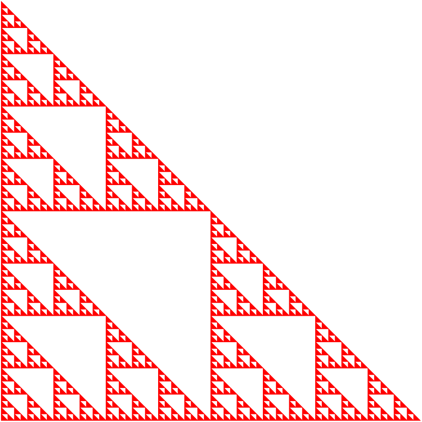
The result is not as nice for the fern and the leaf because they
are fixed points
for more complex IFS. The reader
should repeat this example with the fern and the leaf instead of the
Sierpinski triangle to observe the limits of this function.
To avoid the problem associated to exponential growth in the number of copies of the transformed initial set, we modify our method to compute the iterations. We first rescale the domain. Each IFS is composed of functions of the form \(f_j(\vec{x}) = A_j \vec{x} + \vec{b}_j\) for a given \(2\times 2\) matrix \(A_j\) and vector \(\vec{b}_j\). Let \( \vec{y} = M \vec{x} \) for some large positive integer \(M\). In the new coordinate system, the function \(f_j\) becomes
\[ \begin{equation} \label{Equ1} g_j(\vec{y}) = M f_j\left(M^{-1} \vec{y}\right) = M \left( A_j \left( M^{-1} \vec{y} \right) + \vec{b}_j\right) = A_j \vec{y} + M \vec{b}_j \ . \end{equation} \]Hence, in the new coordinate system, the IFS is given by \( \{ g_j\}_{j=1}^J \) and the function \( f^c \) becomes the function \( g^c \) defined by \(\displaystyle g^c(Y) = \bigcup_{j=1}^J g_j(Y)\).
In theory, in the new coordinate system, the initial set that we should use is the image \(T\) of the initial set \(S\); namely, \( T = \{ M\vec{x} : \vec{x} \in S\} \). After that, we may use the IFS \( \{ g_j\}_{j=1}^J \) composed of the functions given in \eqref{Equ1} with the initial set \(T\). In practice, we use the initial set \(T\) defined by
\[ T = \{ \lfloor M\vec{x} \rfloor \equiv ( \lfloor M x_1 \rfloor ,\lfloor M x_2 \rfloor) : \vec{x} \in S \} \subset \mathbb{Z} \times \mathbb{Z} \ . \]After that, we use the IFS \( \{ g_j\}_{j=1}^J \) composed of the functions given in \eqref{Equ1} restricted to the space \(\mathbb{Z} \times \mathbb{Z}\); namely, we use \(\displaystyle \lfloor g_j(\vec{y}) \rfloor\) instead of \(\displaystyle g_j(\vec{y})\). This is equivalent to representing \(S\) with pixels on the computer screen and implementing the IFS on the pixels.
Since we only get vectors with integer coordinates, the number of
vectors in the unions of all the copies of the transformed initial set
does not increase exponentially. In fact, it
converges
to the number of points with integer
coordinates in (or almost in
) the set representing
the fixed point
of the IFS in the new coordinate
system. By truncating the exact coordinates to get integer
coordinates, we are obviously loosing accuracy. However,
if M is large, then the lost of accuracy does not really affect the
final image displayed because the quality of the final image is still
limited by the number of pixels on the computer screen.
The approach described in the previous paragraphs is implemented in the function defined below. To simplify the computer code, the initial sets are assumed to be polynomial curves. As for the function ifs, this new function can be modified to accept more general initial sets.
% function ifs2(X, N, syst, colour)
%
% X : Initial set, a (2 x n) matrix storing the corners of the
% polygonal curve.
% N : The number of iterations.
% syst : It is one of Sierpinski (default), Fern or Leaf
% colour : One of the colours accepted in Matlab plot/fill.
% The default colour is blue.
%
function ifs2(X, N, syst, colour)
if ( nargin < 4 )
colour = 'blue';
if ( nargin < 3 )
syst = "Sierpinski";
end
end
M = 400;
% We rescale the initial polygonal curve to get the set T.
ro = [];
co = [];
X1 = floor(M*X(:,1));
for i = 2:size(X,2)
X2 = floor(M*X(:,i));
R = max(abs(X1(1,1)-X2(1,1)),abs(X1(2,1)-X2(2,1)))+1;
ro = [ro,floor(linspace(X1(1,1),X2(1,1),R))];
co = [co,floor(linspace(X1(2,1),X2(2,1),R))];
X1 = X2;
end
rc = unique([ro;co]','rows');
% We compute the iterations of the selected IFS starting with T.
if ( strcmpi(syst,"Sierpinski") )
for i = 1:N
fprintf('%d ',i)
rc = sierpinski(rc,M);
end
elseif ( strcmpi(syst,"Fern") )
for i=1:N
fprintf('%d ',i)
rc = fern(rc,M);
end
elseif ( strcmpi(syst,"Leaf") )
for i=1:N
fprintf('%d ',i)
rc = leaf(rc,M);
end
else
disp('No knows IFS has been given. Use help IFS for the instructions.');
return;
end
cla;
hold on;
axis off;
% We rescale the resulting set to the initial coordinate system.
ro = rc(:,1)/M;
co = rc(:,2)/M;
% We draw the resulting set.
p = plot(ro,co,'.');
set(p,'Color',colour);
fprintf('\nThe figure has been drawn.\n');
end
% Sierpinski Triangle
function RC = sierpinski(rc,M)
ro = rc(:,1);
co = rc(:,2);
r1 = 0.5*ro;
c1 = 0.5*co + M*0.5;
r2 = 0.5*ro + M*0.5;
c2 = 0.5*co;
r3 = 0.5*ro;
c3 = 0.5*co;
r = floor([r1;r2;r3]);
c = floor([c1;c2;c3]);
RC = unique([r,c],'rows');
end
% fern
function RC = fern(rc,M)
ro = rc(:,1);
co = rc(:,2);
r1 = 0*ro;
c1 = 0.16*co;
r2 = 0.85*ro + 0.04*co;
c2 = -0.04*ro + 0.85*co + M*1.6;
r3 = 0.20*ro - 0.26*co;
c3 = 0.23*ro + 0.22*co + M*1.6;
r4 = -0.15*ro + 0.28*co;
c4 = 0.26*ro + 0.24*co + M*0.44;
r = floor([r1;r2;r3;r4]);
c = floor([c1;c2;c3;c4]);
RC = unique([r,c],'rows');
end
% leaf
function RC = leaf(rc,M)
ro = rc(:,1);
co = rc(:,2);
r1 = 0.6*ro + M*0.18;
c1 = 0.6*co + M*0.36;
r2 = 0.6*ro + M*0.18;
c2 = 0.6*co + M*0.12;
r3 = 0.4*ro + 0.3*co + M*0.27;
c3 = -0.3*ro + 0.4*co + M*0.32;
r4 = 0.4*ro - 0.3*co + M*0.27;
c4 = 0.3*ro + 0.4*co + M*0.09;
r = floor([r1;r2;r3;r4]);
c = floor([c1;c2;c3;c4]);
RC = unique([r,c],'rows');
end
This function is found in the m-file . It may be useful to modify the previous function by adding the factor \(M\) as argument. Hence, this value could then be chosen to take full advantage of the quality of the computer screen.
Example: The initial set that we choose is the polygonal curve defined by the triangle with vertices at \( (0,0), (1,0) \) and \( (0,1) \). We compute 18 iterations for the fern. We repeat this example with the leaf instead of the fern.
>> X= [ 0 1 0 0 ; 0 0 1 0]; >> ifs2(X,18,'Fern','green') 1 2 3 4 5 6 7 8 9 10 11 12 13 14 15 16 17 18 The figure has been drawn
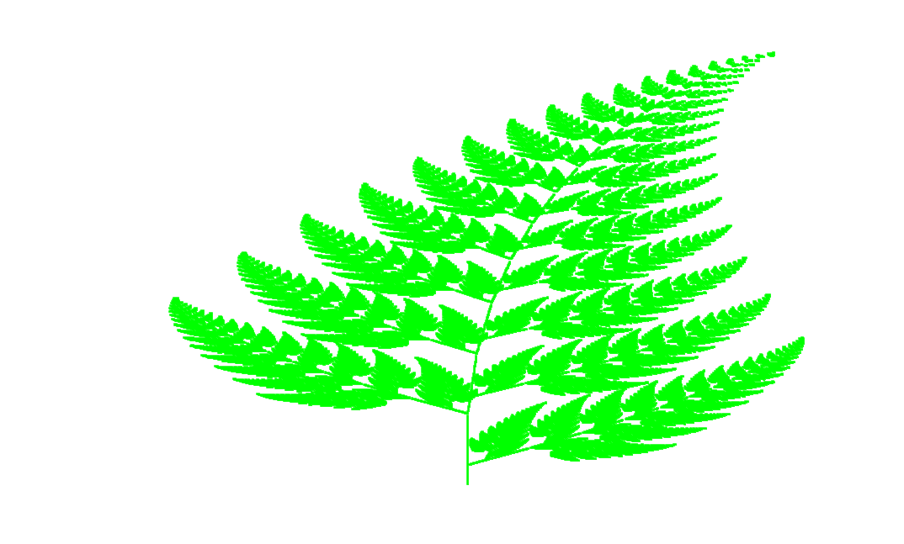
>> ifs2(X,20,'leaf','red') 1 2 3 4 5 6 7 8 9 10 11 12 13 14 15 16 17 18 19 20 The figure has been drawn
Julia Sets
It is shown in the document that the Julia set \(J_R\) of a rational function \(R: \overline{\mathbb{C}} \to \overline{\mathbb{C}} \) is the closure of the set \( \displaystyle \bigcup_{n>0} R^{-n}(\{w\})\) where \(w \in J_R\). It is easy to find the finite fixed points of \(R\) when \(R\) is the polynomial function \(P_c\) defined by \(P_c(z) = z^2 + c\) for \(c\) a constant. They are given by \(z_\pm = (1 \pm \sqrt{1 - 4c})/2\). For \(c\neq 1/4\), if we use the principal branch of the square root function (i.e. with a positive real part) to compute the square root of \(1 -4 c\), then \(|z_+| > 1/2\). Since \(P_c'(z) = 2z\), we get that \(|P_c'(z_+)|>1\). Thus \(z_+\) is a repelling fixed point. Hence, \(z_+ \in J_{P_c}\). For \(c = 1/4\), we have that \(z_+ = z_- = 1/2\) is a neutral fixed point. Nevertheless, the method to draw the Julia set \(J_{P_c}\) works fine for \(c = 1/4\).
We do not have to draw the set
\(\displaystyle \overline{\bigcup_{n>0} P_c^{-n}(\{z_+\})}\)
to get a graphical representation of the Julia set of
\(P_c\) because \(\displaystyle \bigcup_{n>0} R^{-n}(\{w\})\)
and \(\overline{\displaystyle \bigcup_{n>0} R^{-n}(\{w\})}\)
produce basically the same figure due to the limited resolution of the
computer screens. Moreover, we
have to avoid drawing sharp
conclusions about a Julia
set based on the figure displayed on the computer screen. We must not forget
that a pixel on the computer screen represents a disk of small radius in the
complex plan, not a single point. Thus, what may look like a continuous curve
may in fact be an infinite collection of disjoint closed curves or
points. Only the theory can tell us if it is a continuous curve.
The code of the following Matlab function is found in the m-file . This function implements the method described above. The number of backward iterations for this function is limited by the size of the computer memory allocated to Matlab because the function creates large vectors. The typical upper limit on the number of backward iterations is about 20.
% function julia1(c, N, colour)
%
% Draw the Julia set of p_c(z) = z^2 + c.
%
% c : Any complex number. The default value is i.
% N : The number of backward iterations. The default value is 17.
% colour : One of the colours accepted by Matlab.
% The default colour is blue.
%
function julia1(c, N, colour)
if ( nargin < 3 )
colour = 'blue';
if ( nargin < 2 )
N = 17;
if ( nargin < 1 )
c = i;
end
end
end
% Compute the repelling fixed point (1 + sqrt(1 - 4c))/2 , where
% sqrt(1 - 4c) is the square root of 1 - 4c with a non negative
% real part.
x = real(1-4*c);
y = imag(1-4*c);
q = sqrt(x^2+y^2);
if ( x == 0 && y == 0 )
u = 0;
v = 0;
elseif ( x > 0 )
u = sqrt(2*(x+q))/2;
v = y/(2*u);
else
v = sqrt(2*(-x+q))/2;
u = y/(2*v);
end;
w = (1 + (u+i*v))/2;
fprintf('%f + %f i is a repelling fixed point if c ~= 1/4.\n',real(w),imag(w));
fprintf('We use %f + %f i as starting point.\n',real(w),imag(w));
% Compute the bachward iterations and draw the Julia set.
x = real(w-c);
y = imag(w-c);
figure;
for n = 1:N
q = sqrt(x.^2+y.^2);
for j = 1:length(x)
if ( x(j) == 0 && y(j) == 0 )
u(j) = 0;
v(j) = 0;
elseif ( x(j) > 0 )
u(j) = sqrt(2*(x(j)+q(j)))/2;
v(j) = y(j)/(2*u(j));
else
v(j) = sqrt(2*(-x(j)+q(j)))/2;
u(j) = y(j)/(2*v(j));
end;
end
x = [ u , -u ];
y = [ v , -v ];
% We draw the points.
plot(x,y,'.','LineWidth',0.1,'Color',colour);
% Go on with the next iteration (if there is one).
x = [ u , -u ] - real(c);
y = [ v , -v ] - imag(c);
hold on
end
axis equal;
grid on
title(['p(z) = z^2 + ',num2str(real(c)),' + ',num2str(imag(c)),'i']);
hold off
display('The drawing is completed.');
end
Example: The Julia set \(J_{P_{-1}}\) of the polynomial function \(P_{-1}\) defined by \( P_{-1}(z) = z^2 -1\) is represented in the figure below.
>> julia1(-1,20,'k');
1.618034 + 0.000000 i is a repelling fixed point if c ~= 1/4. We use 1.618034 + 0.000000 i as starting point. The drawing is completed.
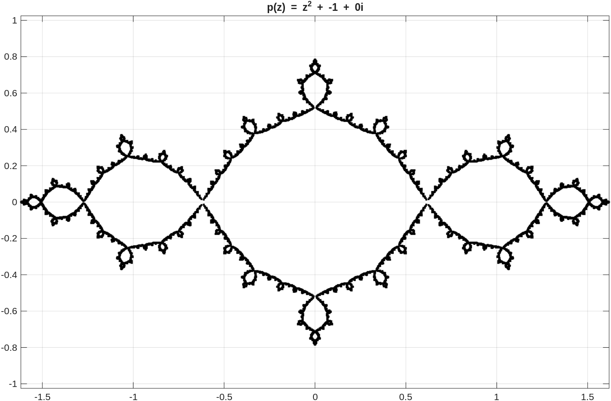
There is another method to draw the Julia set of a rational function. This method has been used since personal computers have been utilized to draw Julia sets. The first personal computers did not have the memory capacity that present personal computers have. Thus, computing the entire preimages was not realistic. A stochastic element was added to the previous method. Instead of computing all the elements of the preimage, only one randomly selected point of each preimage is selected and plotted on the computer screen. This point is then used for the next backward iteration. There is no need to store in memory the coordinates of this point after it has been plotted and used to compute the next backward iteration. To compensate for the points of the preimages that are ignored, the number of backward iterations has to be very large to get a good representation of a Julia set. Very little memory space is used but the computer time can be large.
The code of the following Matlab function is found in the m-file . This function implements the new method described above. The number of iterations for this function is not limited by the size of the computer memory allocated to Matlab but the computer time can be large. The typical number of iterations is at least 40,000. The quality of the figure is limited by the computer accuracy, the quality of the random number generator and the resolution of the computer screen.
% function julia2(c, N, colour)
%
% Draw the Julia set of p_c(z) = z^2 + c.
%
% c : Any complex number. The default value is 0.3.
% N : The number of iterations. The default value is 4000.
% colour : One of the colours accepted by Matlab.
% The default colour is blue.
%
function julia2(c, N, colour)
if ( nargin < 3 )
colour = 'blue';
if ( nargin < 2 )
N = 4000;
if ( nargin < 1 )
c = 0.3;
end
end
end
% Compute the repelling fixed point (1 + sqrt(1 - 4c))/2 , where
% sqrt(1 - 4c) is the square root of 1 - 4c with a non negative
% real part.
x = real(1-4*c);
y = imag(1-4*c);
q = sqrt(x^2+y^2);
if ( x == 0 && y == 0 )
u = 0;
v = 0;
elseif ( x > 0 )
u = sqrt(2*(x+q))/2;
v = y/(2*u);
else
v = sqrt(2*(-x+q))/2;
u = y/(2*v);
end;
w = (1 + (u+i*v))/2;
fprintf('%f + %f i is a repelling fixed point if c ~= 1/4.\n',real(w),imag(w));
fprintf('We use %f + %f i as starting point.\n',real(w),imag(w));
% Compute the bachward iterations and draw the Julia set.
x = real(w-c);
y = imag(w-c);
f = figure;
for n = 1:N
q = sqrt(x^2+y^2);
if ( x == 0 && y == 0 )
u = 0;
v = 0;
elseif ( x > 0 )
u = sqrt(2*(x+q))/2;
v = y/(2*u);
else
v = sqrt(2*(-x+q))/2;
u = y/(2*v);
end;
% We randomly select one of the two preimages.
if ( rand(1) < 0.5 )
x = u;
y = v;
else
x = -u;
y = -v;
end
% We draw the point.
plot(x,y,'.','LineWidth',0.1,'Color',colour);
% Go on with the next iteration (if there is one).
x = x - real(c);
y = y - imag(c);
hold on
end
axis equal;
grid on
title(['p(z) = z^2 + ',num2str(real(c)),' + ',num2str(imag(c)),'i']);
hold off
display('The drawing is completed.');
end
Example: We use our new Matlab function to draw the Julia set \(J_{P_{-1}}\) of the polynomial function \(P_{-1}\) defined by \(P_{-1}(z) = z^2 -1\).
>> julia2(-1,40000,'k');
1.618034 + 0.000000 i is a repelling fixed point if c ~= 1/4. We use 1.618034 + 0.000000 i as starting point. The drawing is completed.
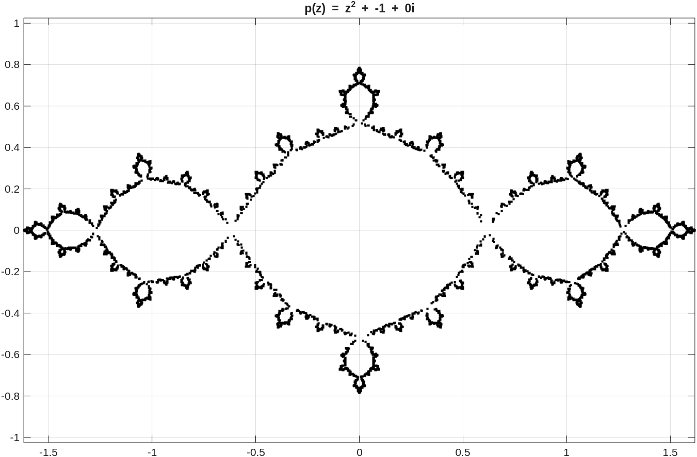
Even after 40,000 iterations, the image of the Julia set
is not as accurate
as the image produced with the previous
method.
It is shown in the document that, if \(z\) is an attracting fixed point of a rational function \(R: \overline{\mathbb{C}} \to \overline{\mathbb{C}} \), then \(J_R = \partial W^s(z,R)\); namely, the Julia set of \(R\) is the boundary of the basin of attraction of \(z\). We provide below a Matlab function that can be used to draw the basin of attraction of an attracting fixed point of a rational function \(R: \overline{\mathbb{C}} \to \overline{\mathbb{C}} \) if an attracting fixed point is known. The code for this Matlab function is found in the m-file . Great care must be given to the choice of the necessary and sufficient condition to determine if a point belongs to the basin of attraction of an attracting fixed point.
The property mentioned in the previous paragraph is used in the document to draw the filled Julia sets for the polynomial functions \(P_c\). The filled Julia set of \(P_c\) is the complement of the basin of attraction of the fixed point \(\infty\) of \(P_c\). For the polynomial functions \(P_c\), it was shown in the document that \(z \in W^s(\infty,P_c)\) if \(P_c^n(z) > \max\{|c|,2\}\) for some \(n \in \mathbb{N}\). It is often much harder to find for other rational functions a necessary and sufficient condition to determine if a point belongs to the basin the attraction of an attracting fixed point.
% function julia3(R, FxPts, options)
%
% Draw the basin of attraction of the given attracting fixed points of
% the rational function R. The boundary of these basins of attraction
% is the Julia set of the rational function R.
%
% R is the name of a function between apostrophes or the handle of
% a function.
% FxPts is an array of the form [p(1) p(2) ... p(n)] where the p(i)
% are fixed points. One of the p(i) can be the infinity denoted Inf.
% If the only fixed point given is Inf, the program follows the
% tradition when drawing filled Julia sets. It colours only the
% points associated to bounded orbits with the given colour or the
% default colour if no colour is given.
%
% List of options:
% 'Region' is an array of the form [a b c d]. The portion of the
% Julia set inside the region [a,b] x [c,d] is displayed.
% The default region is [-2,2]x[-2,2].
% 'NbrItr' is the number of iterations to determine if a point
% belongs to the basin of attraction of a fixed point.
% The default value is 50.
% 'Density' is a positive integer. This the number of points per
% unit used to plot the basins of attraction. The default
% value is 200.
% 'Tols' is an array that may have 1 element or the same number of
% elements as FxPts. A point z belongs to the basin of
% attraction of the fixed point p(i) if
% |R^n(z) - FxPts(i)| < Tols(i) for
% two consecutive values of n <= NbrItr. If there is only
% one element in Tols, then this tolerance is used for all the
% fixed points. The default value is 10^(-5).
% If FxPts(i) = Inf for some i, then Tols must be of the same
% size as FxPts. A point is declared to belong to the basin
% of attraction of Inf if |R^n(z)| > Tols(i) for some n <= NbrItr.
% 'Colours' is a cell array of the form {'col1' ,'col2', ... } where
% col1, col2, ... are colours allowed by Matlab. This cell
% array may have 1 element or the same number of elements
% as FxPts. If only one colour is given, then different
% intensity of this colour are used to colour the
% basins of attraction. The default colour is black.
% 'BckCol' is the background colour of the figure. Only colours allowed
% by Matlab are accepted. The default colour is white.
%
function julia3(R, FxPts, varargin)
if ( ~isa(R, 'function_handle') && ~exist(R,'file') == 2 )
disp('A function must be given.')
disp('Use the help command for more information.');
return;
end
if ( length(FxPts) == 0 )
disp('At least one fixed point must be given.')
disp('Use the help command for more information.');
return;
end
% Default values:
region = [-2 2 -2 2];
nbrItr = 50;
density = 200;
tols = [10^(-5)];
colours = {'black'};
bckCol = 'white';
while ( ~isempty(varargin) )
switch lower(varargin{1})
case 'region'
region = varargin{2};
case 'nbritr'
nbrItr = varargin{2};
case 'density'
density = varargin{2};
case 'tols'
tols = varargin{2};
case 'colours'
colours = varargin{2};
case 'bckcol'
bckCol = varargin{2};
otherwise
disp("Unknown option: "+varargin{1});
end
varargin = varargin(3:length(varargin));
end
nFxPts = length(FxPts);
pTols = [];
nTols = length(tols);
% Reset tols to its default if necessary.
if ( nTols == 0 )
tols = [10^(-5)];
nTols = 1;
disp('The default tolerance is used.')
end
if ( nTols == nFxPts )
pTols = tols;
else
if ( nTols > 1 && nTols < nFxPts )
disp('Not enough tolerances have been given, we use')
disp('only the first given tolerance.')
disp('Use the help command for more information.');
end
pTols = ones(1,nFxPts)*tols(1);
end
pColours = {};
nColours = size(colours,2);
% Reset Colours to its default if necessary.
if ( nColours == 0 )
colours = { 'black' };
nColours = 1;
disp('The default colour is used.')
end
if ( nColours == nFxPts )
pColours = colours;
else
if ( nColours > 1 && nColours < nFxPts )
disp('Not enough colours have been given, we use')
disp('only the first given colour.')
disp('Use the help command for more information.');
end
rgbColor = validatecolor(colours{1});
if ( sum(rgbColor) == 0 )
% The black colour needs to be treated as the white colour
% in "reverse order".
for j = 1:nFxPts
pColours{j} = ...
['[',num2str((nFxPts-j+2)/(nFxPts+3)*ones(1,3)),']'];
end
else
for j = 1:nFxPts
pColours{j} = ...
['[',num2str((nFxPts-j+2)/(nFxPts+3)*rgbColor),']'];
end
end
end
mx = round((region(2)-region(1))*density);
my = round((region(4)-region(3))*density);
x = linspace(region(1),region(2),mx);
y = linspace(region(3),region(4),my);
figure;
for k1 = 1:length(x)
for k2 = 1:length(y)
flag = 0;
w1 = x(k1) + i*y(k2);
if ( nFxPts == 1 && FxPts(1) == Inf )
for k = 1:nbrItr
w2 = feval(R,w1);
if ( abs(w2) > pTols(1) )
flag = 1;
break;
end
w1 = w2;
end
if ( flag == 0 )
plot(x(k1),y(k2),'.','color',pColours{1},'LineWidth',0.1);
hold on;
end
else
for k3 = 1:nbrItr
w2 = feval(R,w1);
for k4 = 1:nFxPts
if ( FxPts(k4) == Inf )
if ( abs(w1) > pTols(k4) && abs(w2) > pTols(k4) )
plot(x(k1),y(k2),'.','LineWidth',0.1, ...
'Color',pColours{k4});
hold on
flag = 1;
break;
end
else
if ( abs(w1-FxPts(k4)) < pTols(k4) && ...
abs(w2-FxPts(k4)) < pTols(k4) )
plot(x(k1),y(k2),'.','LineWidth',0.1, ...
'Color',pColours{k4});
hold on
flag = 1;
break;
end
end
end
if ( flag == 1 )
break;
end
w1 = w2;
end
end
end
end
axis(region);
axis equal;
grid on
set(gca,'Color',bckCol);
if ( isa(R,'function_handle') )
if ( exist(func2str(R), 'file') ~= 2 && ...
exist(func2str(R), 'builtin') ~= 5 )
title(['R(z) = ',func2str(R)]);
else
title(['R(z) = ',func2str(R),'(z)']);
end
else
title(['R(z) = ',R,'(z)']);
end
hold off
display('The drawing is completed.');
end
The following example is a classical example that is found in almost all the textbooks on Julia sets and the Mandelbrot set.
Example: If we use Newton's method to approximate the roots of the function \(f\) defined by \(f(z) = z^3 -1\), we have to iterate the function \(R\) defined by \(\displaystyle R(z) = z - \frac{f(z)}{f'(z)} = \frac{2 z^3 + 1}{3 z^2}\). The polynomial \(z^3-1\) has three roots in the complex plane; \(1\), \((1+\sqrt{3}i)/2\) and \((1-\sqrt{3}i)/2\). They are the fixed points of \(R\). The initial value \(z_0\) has to be chosen with care if we want the sequence \(\displaystyle \{z_j\}_{j=0}^\infty\) with \(z_{j+1} = R(z_j)\) to converge to the desired root of \(z^3-1\). The black region inside the rectangle \( K = \{ z = a + bi : \max\{|a|,|b|\} \leq 2 \} \) in the figure below is the basin of attraction of the attracting fixed point \(1\) of \(R\) in the rectangle \(K\). The boundary of this basin of attraction represents the Julia set of \(R\) inside the rectangle \(K\). To produce the figure below, we have used the condition that a point \(z\) belongs to the basin of attraction of a fixed point \(p\) if \(|R^n(z) - p| < 10^{-3}\) for some \(n \in \mathbb{N}\). This is a necessary condition but not a sufficient one. It is not even necessary if we consider only a finite number of iterations as it is done in the function julia3. We nevertheless get an acceptable figure.
>> R = @(z) (2*z^3 + 1)/(3*z^2);
>> r1 = 1;
>> r2 = 1/2+sqrt(3)*i/2;
>> r3 = 1/2-sqrt(3)*i/2;
>> julia3(R,[r1 r2 r3],'Tols',[0.001 0.001 0.001], ...
'Colours',{'black','white','white'},'Density',200,'Region',[-2 2 -2 2],'...
NbrItr',30);
The drawing is completed.
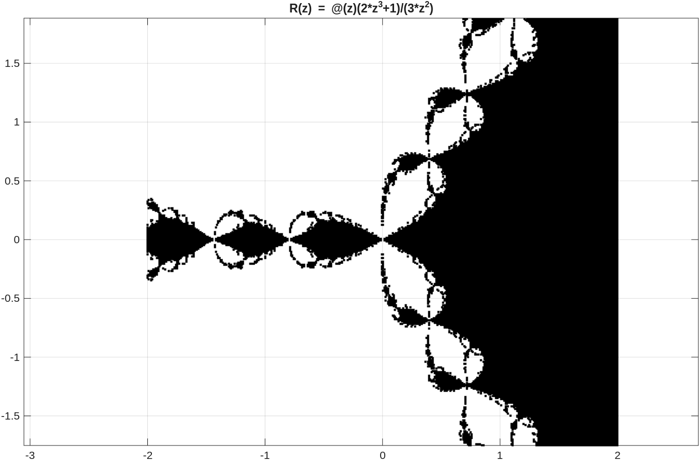
The reader is probably wondering why we did not simply use the command julia3(R,[r1],'Tols',[0.001],'Colours',{'black'}, ...); to draw the basin of attraction of \(1\). If the density of points and the number of iteration are large, the Matlab function julia3 will use a lot of computing time and memory space. In particular, at every point \(z\) where the orbit \(\displaystyle \{P_c^n(z)\}_{n=0}^\infty\) does not converge toward \(1\), the computer has to compute all the iterations to conclude that \(z\) is not in the basin of attraction of \(1\). Since the convergence toward a fixed point is usually very fast, when there is convergence, the computing time is greatly reduced by drawing the basins of attraction of the other fixed points, even if it is in white as in this example. The reader may like to repeat this example with different colours for the basins of attraction of \(r_1\) and \(r_1\). We did not do that to clearly display the Julia set of \(R\) represented by the boundary of the basin of attraction of \(1\).
We assume that the reader has read the section about filled Julia
sets in the document
. The following figure illustrates the algorithm used by the
function julia4, given below, to sketch the
equipotential lines \(\Gamma_c(e^{2^{3-j}})\) for
\(j \geq 0\) associated to the filled Julia set of the polynomial
function \(P_c\). The curve drawn
by the function julia4 is a piecewise linear
curve that is almost
the true curve
\(\Gamma_c(e^{2^{3-j}})\).
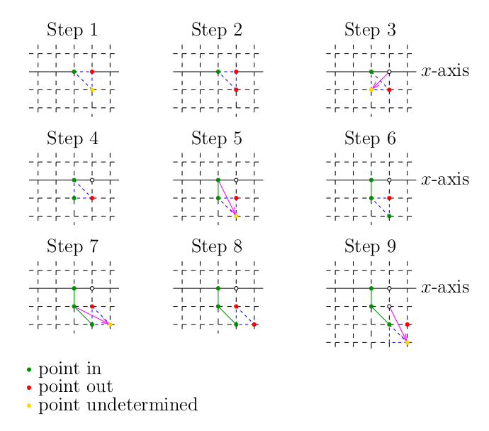
- Starting from the origin, the first step is to find the first point on the positive section of the \(x\) axis that is outside the set \(Q_c(e^{2^{3-j}})\). This point is coloured in red. The previous point is inside the set \(Q_c(e^{2^{3-j}})\) and is coloured in green. We select the point below the red point and colour it in yellow.
- We determine if the yellow point is inside or outside the set \(Q_c(e^{2^{3-j}})\). We suppose for the purpose of this discussion that this point is outside the set \(Q_c(e^{2^{3-j}})\). Thus, we colour this point in red.
- We reflect the first red point through the segment whose end points are the new red point and the green point to get a new point that we colour in yellow.
- We determine if the point in yellow is inside or outside the set \(Q_c(e^{2^{3-j}})\). We suppose for the purpose of this discussion that it is inside the set \(Q_c(e^{2^{3-j}})\). Thus, we colour this point in green.
- The two consecutive points in green provide the first segment that forms the curve \(\Gamma_c(e^{2^{3-j}})\). We reflect the first green point through the segment whose end points are the new green point and the red point to get a new point that we colour in yellow.
- We determine if the point in yellow is inside or outside the set \(Q_c(e^{2^{3-j}})\). We suppose for the purpose of this discussion that it is inside the set \(Q_c(e^{2^{3-j}})\). Thus, we colour this point in green.
- The two consecutive points in green provide the second segment that forms the curve \(\Gamma_c(e^{2^{3-j}})\). We reflect the second point in green through the segment whose end points are the new green point and the red point to get a new point that we colour in yellow.
- We determine if the point in yellow is inside or outside the set \(Q_c(e^{2^{3-j}})\). We suppose for the purpose of this discussion that it is outside the set \(Q_c(e^{2^{3-j}})\). Thus, we colour this point in red.
- We reflect previous red point through the segment whose end points are the new red point and the third green point to get a new point that we colour in yellow.
- And so on.
At each step, we consider only the points that are the vertices of the triangle drawn with a dashed blue line. The point that is reflected is never the point that was coloured in yellow two step before. The reflection is always through a segment with a red point as one of the end points and a green point as the other end point. The curve that is drawn is in fact inside the set \(Q_c(e^{2^{3-j}})\) but very closed to \(\partial Q_c(e^{2^{3-j}})\). The code of the following Matlab function is found in the m-file .
% function julia4(c,options)
%
% This function draw the (filled) Julia set of P_c(z) = z^2 + c with some
% level curves Gamma_c(exp(2^(3-j))) if requested. The value of c
% must be a value such that P_c has a connected Julia set.
%
% c is a complex number.
%
% List of options:
% 'Region' is an array of the form [a b c d]. The portion of the
% Julia set in the region [a,b] x [c,d] is displayed.
% The default region is [-2,2]x[-2,2].
% 'Density' is a positive integer. This is the number of points per
% unit used to plot the filled Julia set. Double this
% value is used to draw the level curves. The default
% value is 200.
% 'NbrItr' is a positive integer number. When plotting the filled Julia
% set, this is the number of iterations used to determine
% if the orbit { P_c^n(z)}_{n>0} is unbounded.
% Namely, it is unbounded if |P_c^n(z)| > max{2,|c|} for some
% n < NbrItr + 1. The default value is 100.
% 'Levels' is a array of integer numbers (preferably greater than 3).
% The level curves Gamma_c(exp(2^(3-levels(j)))) for
% j=1,2,...,length(levels) are drawn in addition of the
% Julia set. The function looks for level curves
% that go through the segment [0, max{2,abs(c),region(2)}].
% The default is Levels = [4].
% 'Colour' is the colour to draw the Julia set. Only colours
% allowed by Matlab can be used. The default colour is black.
% 'ColLev' is a cell array of the form {'col1' ,'col2', ... } where
% col1, col2, ... are colours allowed by Matlab. These
% colours are used to draw the level curves
% Gamma_c(exp(2^(3-levels(j)))). If there are more level
% curves than colours, the colours are reused. If only one
% colour is given, then all the level curves are coloured
% using this colour. The default is to use different
% intensities of the colour for the Julia set.
% 'MaxPts' is the maximum number of points that a level curve may
% have. The default value is 40,000. It should be
% more than sufficient for all reasonable choices of
% Density.
% 'Filled' is true or false. If set to true, the filled julia set
% drawn. If set to false, only the julia set is drawn.
% The default value is true.
% 'BackItr' is the number of backward iterations used to draw the Julia
% set if it is required. The default value is 17.
%
function julia4(c,varargin)
if ( ~isnumeric(c) )
disp('The value of c must be given.')
disp('Use the help command for more information.');
return;
end
% Default values:
region = [-2 2 -2 2];
density = 200;
nbrItr = 100;
levels = [4];
colour = 'black';
colLev = {};
maxPts = 40000;
filled = true;
backItr = 17;
while ( ~isempty(varargin) )
switch lower(varargin{1})
case 'region'
region = varargin{2};
case 'density'
density = varargin{2};
case 'nbritr'
nbrItr = varargin{2};
case 'levels'
levels = varargin{2};
case 'colour'
colour = varargin{2};
case 'collev'
colLev = varargin{2};
case 'maxpts'
maxPts = varargin{2};
case 'filled'
filled = varargin{2};
case 'backitr'
backItr = varargin{2};
otherwise
disp("Unknown option: "+varargin{1});
end
varargin = varargin(3:length(varargin));
end
lLevels = length(levels);
pColours = {};
rgbColour = validatecolor(colour);
nColLev = size(colLev,2);
if ( nColLev > 0 )
for j = 1:lLevels;
pColours{j} = colLev{rem((j-1),nColLev)+1};
end
else
if ( sum(rgbColour) == 0 )
% The black colour needs to be treated as the white colour
% in "reverse order".
for j = 1:lLevels
pColours{j} = ...
['[',num2str((lLevels-j+2)/(lLevels+3)*[1 1 1]),']'];
end
else
for j = 1:lLevels
pColours{j} = ...
['[',num2str((lLevels-j+2)/(lLevels+3)*rgbColour),']'];
end
end
end
% We use the set B_{exp(8)}(0) suggested in the document
% about the Mandelbrot set.
M = exp(8);
% This is the escape condition for the Julia set.
Mjulia = max(2,abs(c));
% The step size for the real coordinates.
step = 1/density;
% We use a grid of integer coordinates to keep track of
% the points on a level curve. Since the grid use integer
% coordinates, the tests for equality are also possible.
xmax = floor(max(Mjulia,region(2))*density);
figure;
for k1 = 1:lLevels
% We search the intersection of the level curve with the
% positive section of the x axis.
xz = 0;
for k2 = 1:xmax
z = k2*step;
if ( outside(c,z,levels(k1),M) )
xz = k2;
break
end
end
% If the level curve does not intersect the interval
% [0,region(2)] on the x-axis, we ignore this level curve.
if ( xz == 0 )
disp(['The level curve with j = ',num2str(levels(k1)),...
' cannot be drawn because it does not go through the',
' segment [0,',num2str(xmax),'].']);
disp('Please, choose larger values of j.');
continue;
end
cin = 1;
cout = 2;
cnew = 3;
x(cin) = xz-1;
y(cin) = 0;
x(cout) = xz;
y(cout) = 0;
x(cnew) = xz;
y(cnew) = -1;
% Save these information to determine when the
% level curve is closed. Namely, when it reaches
% again the positive section of the x-axis.
xin = x(cin);
yin = y(cin);
xout = x(cout);
yout = y(cout);
% This is the first point on the curve
% Gamma_c(exp(2^(3-levels(k))))
xpts = [xin];
ypts = [yin];
% We set a limit of 10,000 points per level curve.
% A while ( 1 == 1 ) loop should also work but to avoid
% any risk of infinite loop, we have set a upper bound.
n = 0;
for n = 1:maxPts
% Look for the next point on the level curve.
if ( outside(c,step*x(cnew)+i*step*y(cnew),levels(k1),M) )
% We do not interchange the values put the indices.
% This is more economic in terms of computer time.
tmp = cout;
cout = cnew;
else
% This is another point on the curve
% Gamma_c(exp(2^(3-levels(k))))
xpts = [xpts x(cnew)];
ypts = [ypts y(cnew)];
% We do not interchange the values put the indices.
% This is more economic in terms of computer time.
tmp = cin;
cin = cnew;
end
% test if we are back to the positive section of the
% x-axis.
if ( (x(cin) == xin && y(cin) == yin) && ...
(x(cout) == xout && y(cout) == yout) )
break;
end
cnew = tmp;
x(cnew) = x(cout) + x(cin) - x(tmp);
y(cnew) = y(cout) + y(cin) - y(tmp);
end
if ( n == maxPts )
disp('Cannot draw the entire level curve because of the limit');
disp('on the number of admissible points per level curve.');
end
% Only draw the segments of the level curve inside the given region.
Rxpts = step*xpts;
Rypts = step*ypts;
G = real( (Rxpts >= region(1)) & (Rxpts <= region(2)) & ...
(Rypts >= region(3)) & (Rypts <= region(4)) );
G(G==0) = NaN;
Rxpts = G.*Rxpts;
Rypts = G.*Rypts;
disp(['Level curve with j = ',num2str(levels(k1)),' (',num2str(n),...
' points)']);
plot(Rxpts,Rypts,'.','color',pColours{k1},'LineWidth',0.1);
hold on;
end
% We now plot the filled Julia set.
if ( filled )
juliaF(c,region,density,nbrItr,colour,Mjulia);
else
juliaJ(c,backItr,colour);
end
% The Legend.
if ( nColLev ~= 1 )
skip = 0;
for j = 1:lLevels
txt = text(region(1),region(4)-(j-1)*skip, ...
['k = ',num2str(levels(j))],'Color',pColours{j}, ...
'VerticalAlignment','top','BackgroundColor', 'white');
if ( j == 1 )
skip = min(txt.Extent(4),(region(4)-region(3))/lLevels);
end
end
end
axis equal;
grid on;
hold off;
display('The drawing is completed.');
end
% To determine if there exits 1 <= n <= N such that |P_c^n(z)| >= M .
function v = outside(c,z,N,M)
v = false;
z1 = z;
for n = 1:N
z2 = z1^2 + c;
if ( abs(z2) > M )
v = true;
break;
end
z1 = z2;
end
end
% To draw the filled Julia set.
function juliaF(c,region,density,nbrItr,colour,Mjulia)
Dx = floor((region(2)-region(1))*density);
Dy = floor((region(4)-region(3))*density);
x = linspace(region(1),region(2),Dx);
y = linspace(region(3),region(4),Dy);
for n = 1:length(x)
for m = 1:length(y)
z1 = x(n) + i*y(m);
flag = 0;
for k = 1:nbrItr
z2 = z1^2 + c;
if ( abs(z2) > Mjulia )
flag = 1;
break;
end
z1 = z2;
end
if ( flag == 0 )
plot(x(n),y(m),'.','color',colour,'LineWidth',0.1);
hold on;
end
end
end
end
function juliaJ(c, N, colour)
% Compute the repelling fixed point (1 + sqrt(1 - 4c))/2 , where
% sqrt(1 - 4c) is the square root of 1 - 4c with a non negative
% real part.
x = real(1-4*c);
y = imag(1-4*c);
q = sqrt(x^2+y^2);
if ( x == 0 && y == 0 )
u = 0;
v = 0;
elseif ( x > 0 )
u = sqrt(2*(x+q))/2;
v = y/(2*u);
else
v = sqrt(2*(-x+q))/2;
u = y/(2*v);
end;
w = (1 + (u+i*v))/2;
fprintf('%f + %f i is a repelling fixed point if c~= 1/4.\n',real(w),imag(w));
fprintf('We use %f + %f i as starting point.\n',real(w),imag(w));
% Compute the bachward iterations and draw the Julia set.
x = real(w-c);
y = imag(w-c);
for n = 1:N
q = sqrt(x.^2+y.^2);
for j = 1:length(x)
if ( x(j) == 0 && y(j) == 0 )
u(j) = 0;
v(j) = 0;
elseif ( x(j) > 0 )
u(j) = sqrt(2*(x(j)+q(j)))/2;
v(j) = y(j)/(2*u(j));
else
v(j) = sqrt(2*(-x(j)+q(j)))/2;
u(j) = y(j)/(2*v(j));
end;
end
x = [ u , -u ];
y = [ v , -v ];
% We draw the points.
plot(x,y,'.','LineWidth',0.1,'Color',colour);
% Go on with the next iteration (if there is one).
x = [ u , -u ] - real(c);
y = [ v , -v ] - imag(c);
hold on
end
end
Example: We draw the equipotential lines \(\Gamma_c(e^{2^{3-j}})\) for \(j=4,6,8,10\) associated to the filled Julia set of \(P_c\) with \(c = 0.27 - 0.48i\).
>> julia4(0.27-0.48*i,'Levels',[4,6,8,10],'ColLev',{'blue'});
Level curve with j = 4 (4678 points)
Level curve with j = 6 (3422 points)
Level curve with j = 8 (3414 points)
Level curve with j = 10 (3862 points)
The drawing is completed.
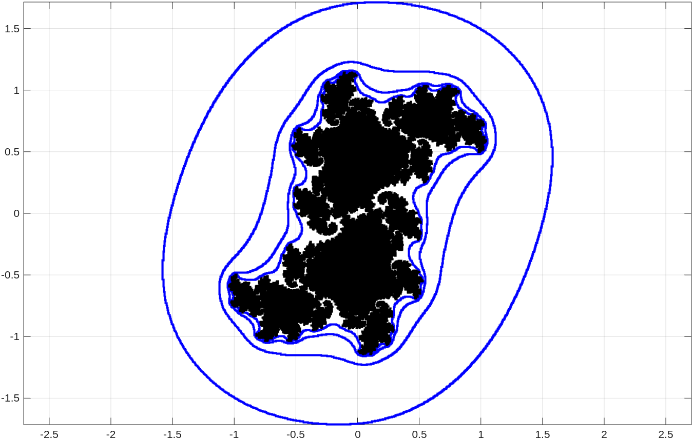
Mandelbrot Set
The Mandelbrot set, denoted \(M\), is the set defined by \(\displaystyle \{c \in \mathbb{C} : \{P_c^n(0)\}_{n=0}^\infty \text{ is bounded}\}\) where \(P_c\) is the polynomial function defined by \(P_c(z) = z^2 + c\) for \(z \in \mathbb{C}\). This set is closely associated to the study of the the Julia sets of \(P_c\). To learn more about the Mandelbrot set, the reader may consult the document . In this section, we only present some Matlab functions to draw the Mandelbrot set and its equipotential lines.
The first Matlab function is mandelbrot1. This function draws the Mandelbrot set. It can also be used to colour hyperbolic subsets of the Mandelbrot set associated to the values of \(c\) for which \(P_c\) has an attracting periodic orbit of a given period. The accuracy of the hyperbolic subsets drawn is limited by the number of iterations and tolerance used to determine the existence of an attracting periodic orbit, and the density of the points in the image. The accuracy of the hyperbolic subsets drawn is also limited by round-off errors in the computations. So, increasing the number of iterations does not always improve the quality of the image. The code of the Matlab function mandelbrot1 is found in the m-file .
% function mandelbrot1(options)
%
% List of options:
% 'Region' is an array of the form [a b c d]. The Mandelbrot set
% in the region [a,b] x [c,d] is displayed. The default
% region is [-2,2]x[-2,2].
% 'Density' is a positive integer. This is the number of points per unit.
% The default value is 100.
% 'NbrItr' is a positive integer number. This is the number of
% iterations used to determine if the orbit
% { P_c^n(0)}_{n>0} is unbounded. Namely, it is unbounded
% if |P_c^n(0)| > 2 for some n < NbrItr + 1. The default value
% is 200. This is also the number of iterations used to
% determine if the orbit converges to a period orbit.
% 'Periods' is a array of periods. The hyperbolic sets associated to
% attractive periodic orbits with these periods are highlighted.
% WARNING: The method used to identify the periodic orbits may
% produce wrong results. Use at your own risk. By default, no
% period is given. Moreover, if you ask for hyperbolic
% sets associated to periodic orbits of period p without
% asking for hyperbolic sets associated to periodic orbits
% of period q where q is a divisor of p, then the hyperbolic
% sets associated to periodic orbits of period q will be
% highlighted as hyperbolic sets associated to periodic
% orbits of period p as it may be expected.
% 'Tol" is a real number. This is the accuracy used to determine
% if an orbit has converged to an attracting periodic orbit.
% The default value is 10^(-7).
% 'Colour' is the colour to draw the Mandelbrot set. Only colours
% allowed by Matlab can be used. The default colour is black.
% 'ColPer' is a cell array of the form {'col1' ,'col2', ... } where
% col1, col2, ... are colours allowed by Matlab. These
% colours are used to draw the hyperbolic sets. If there
% are more periods than colours, the colours are reused.
% The default is to use different intensities of the colour
% for the Mandelbrot set.
%
function mandelbrot1(varargin)
% Default values:
region = [-2 2 -2 2];
density = 100;
nbrItr = 200;
periods = [];
tol = 10^(-7);
colour = 'black';
colPer = {};
while ( ~isempty(varargin) )
switch lower(varargin{1})
case 'region'
region = varargin{2};
case 'density'
density = varargin{2};
case 'nbritr'
nbrItr = varargin{2};
case 'periods'
periods = varargin{2};
case 'tol'
tol = varargin{2};
case 'colour'
colour = varargin{2};
case 'colper'
colPer = varargin{2};
otherwise
disp("Unknown option: "+varargin{1});
end
varargin = varargin(3:length(varargin));
end
figure;
% We assume that an orbit converges to a periodic orbit of
% period p when 3 consecutive values of
% {P_c^{pn}(0)}_{n>=0} are equal up to the toleranece given by tol.
lAB = 0;
if ( length(periods) > 0 )
AB = sort(periods);
lAB = length(AB);
nAB = 2*AB(lAB)+1;
pColours = {};
rgbColour = validatecolor(colour);
nColPer = size(colPer,2);
if ( nColPer > 0 )
for j = 1:lAB
pColours{j} = colPer{rem((j-1),nColPer)+1};
end
else
if ( sum(rgbColour) == 0 )
% The black color needs to be treated as the white color
% in "reverse order".
for j = 1:lAB
pColours{j} = ['[',num2str((lAB-j+2)/(lAB+3)*[1 1 1]),']'];
end
else
for j = 1:lAB
pColours{j} = ['[',num2str((lAB-j+2)/(lAB+3)*rgbColour),']'];
end
end
end
end
Dx = floor((region(2)-region(1))*density);
Dy = floor((region(4)-region(3))*density);
x = linspace(region(1),region(2),Dx);
y = linspace(region(3),region(4),Dy);
for n = 1:length(x)
for m = 1:length(y)
c = x(n) + i*y(m);
z1 = 0;
flag = 0;
if ( lAB > 0 )
Pz = [z1];
end
for k = 1:nbrItr
z2 = z1^2 + c;
if ( abs(z2) > 2 )
flag = -1;
break;
end
if ( lAB > 0 )
if ( length(Pz) < nAB )
Pz = [Pz z2];
else
for j=1:lAB
for s=1:3;
vPz(s) = Pz(nAB - (s-1)*AB(j));
end
if ( abs(vPz(1)-vPz(2)) < tol && ...
abs(vPz(2)-vPz(3)) < tol && ...
abs(vPz(1)-vPz(3)) < tol )
flag = AB(j);
break;
end
end
Pz = [Pz(2:nAB) z2];
end
end
z1 = z2;
end
if ( flag == 0 )
plot(x(n),y(m),'.','color',colour,'LineWidth',0.1);
hold on;
end
for j = 1:lAB
if ( flag == AB(j) )
plot(x(n),y(m),'.','Color',pColours{j},'LineWidth',0.1);
hold on;
end
end
end
end
% The Legend.
skip = 0;
for j = 1:lAB
txt = text(region(1),region(4)-(j-1)*skip, ...
['Period ',num2str(AB(j))],'Color',pColours{j}, ...
'VerticalAlignment','top','BackgroundColor','white');
if ( j == 1 )
skip = min(txt.Extent(4),(region(4)-region(3))/lAB);
end
end
axis(region);
axis equal;
grid on;
hold off;
display('The drawing is completed.');
end
Example: We draw the Mandelbrot set with the hyperbolic subsets associated to the values of \(c\) for which \(P_c\) has an attracting fixed point or an attracting periodic orbit of period \(2\), \(3\) or \(4\).
>> mandelbrot1('Region',[-2 1.5 -1.3 1.3],'NbrItr',500, ...
'Periods',[1 2 3 4], 'ColPer',{'red','blue','green','magenta'}, ...
'Tol',10^(-8),'Density',150);
The drawing is completed.
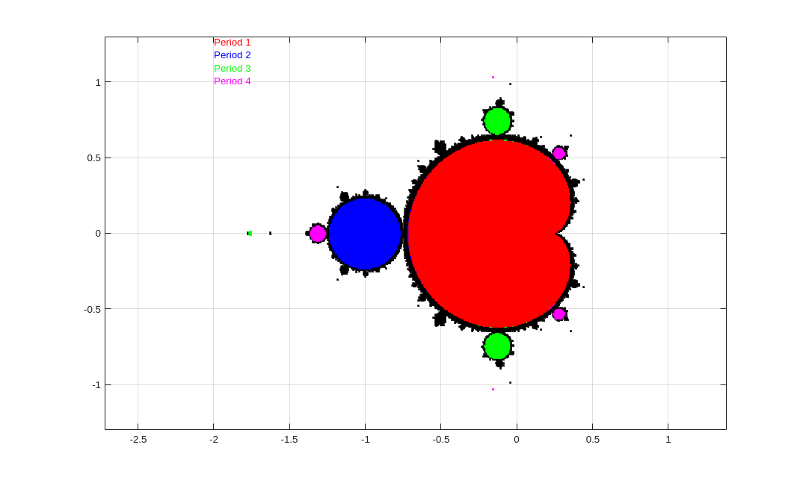
We assume that the reader has read the section about the equipotential lines of the Mandelbrot set in the document . The next Matlab function is mandelbrot2 This function draws the Mandelbrot set. It can also be used to draw the equipotential lines \(\Gamma_M(e^{2^{3-j}})\) for \(j \geq 0\). The method used by this function to draw the equipotential lines of the Mandelbrot set is the same method than the method used by the Matlab function julia4 to drawn the equipotential lines of the (filled) Julia set of the polynomial functions of the form \(P_c\) presented in the previous section. The code of the Matlab function mandelbrot2 is found in the m-file .
% function mandelbrot2(options)
%
% List of options:
% 'Region' is an array of the form [a b c d]. The Mandelbrot set
% in the region [a,b] x [c,d] is displayed. The default
% region is [-3,3]x[-2,2].
% 'Density' is a positive integer. This the number of points per
% unit used to plot the Mandelbrot set. Double this
% value is used to draw the level curves. The default
% value is 200.
% 'NbrItr' is a positive integer number. When plotting the
% Mandelbrot set, this is the number of iterations used
% to determine if the orbit { P_c^n(0)}_{n>0} is
% unbounded. Namely, it is unbounded if |P_c^n(0)| > 2
% for some n < NbrItr + 1. The default value is 100.
% 'Levels' is an array of integer numbers (preferably greater than 3).
% The level curves Gamma_c(exp(2^(3-levels(j)))) for
% j=1,2,...,length(levels) are drawn in addition of the
% Mandelbrot set. The function looks for level curves
% that go through the segment [0, max(2,region(2))].
% The default is Levels = [4].
% 'Colour' is the colour to draw the Mandelbrot set. Only colours
% allowed by Matlab can be used. The default colour is black.
% 'ColLev' is a cell array of the form {'col1' ,'col2', ... } where
% col1, col2, ... are colours allowed by Matlab. These
% colours are used to draw the level curves
% Gamma_c(exp(2^(3-levels(j)))). If there are more level
% curves than colours, the colours are reused. If only one
% colour is given, then all the level curves are drawn using this
% colour. The default is to use different intensities of the
% colour for the Julia set.
% 'MaxPts' is the maximum number of points that a level curve may
% have. The default value is 40,000. It should be
% more than sufficient for all reasonable choices of
% Density.
%
function mandelbrot2(varargin)
% Default values:
region = [-3 3 -2 2];
density = 200;
nbrItr = 100;
levels = [4];
colour = 'black';
colLev = {};
maxPts = 40000;
while ( ~isempty(varargin) )
switch lower(varargin{1})
case 'region'
region = varargin{2};
case 'density'
density = varargin{2};
case 'nbritr'
nbrItr = varargin{2};
case 'levels'
levels = varargin{2};
case 'colour'
colour = varargin{2};
case 'collev'
colLev = varargin{2};
case 'maxpts'
maxPts = varargin{2};
otherwise
disp("Unknown option: "+varargin{1});
end
varargin = varargin(3:length(varargin));
end
lLevels = length(levels);
pColours = {};
rgbColour = validatecolor(colour);
nColLev = size(colLev,2);
if ( nColLev > 0 )
for j = 1:lLevels;
pColours{j} = colLev{rem((j-1),nColLev)+1};
end
else
if ( sum(rgbColour) == 0 )
% The black colour needs to be treated as the white colour
% in "reverse order".
for j = 1:lLevels
pColours{j} = ...
['[',num2str((lLevels-j+2)/(lLevels+3)*[1 1 1]),']'];
end
else
for j = 1:lLevels
pColours{j} = ...
['[',num2str((lLevels-j+2)/(lLevels+3)*rgbColour),']'];
end
end
end
% We use the set B_{exp(8)}(0) suggested in the document
% about the Mandelbrot set.
M = exp(8);
% The step size for the real coordinates.
step = 1/density;
% We use a grid of integer coordinates to keep track of
% the points on a level curve. Since the grid use integer
% coordinates, the tests for equality are also possible.
xmax = floor(max(2,region(2))*density);
figure;
for k1 = 1:lLevels
% We search the intersection of the h'th level curve with the
% positive section of the x axis.
xc = 0;
for k2 = 1:xmax
c = k2*step;
if ( outside(c,levels(k1),M) )
xc = k2;
break
end
end
% If the level curve does not intersect the interval
% [0,xmax] on the x-axis, we ignore this level curve.
if ( xc == 0 )
disp(['The level curve with j = ',num2str(levels(k1)),...
' cannot be drawn because it does not go through the',
' segment [0,',num2str(xmax),'].']);
disp('Please, choose larger values of j.');
continue;
end
cin = 1;
cout = 2;
cnew = 3;
x(cin) = xc-1;
y(cin) = 0;
x(cout) = xc;
y(cout) = 0;
x(cnew) = xc;
y(cnew) = -1;
% Save these information to determine when the
% level curve is closed. Namely, when it reaches
% again the positive section of the x-axis.
xin = x(cin);
yin = y(cin);
xout = x(cout);
yout = y(cout);
% This is the first point on the curve
% Gamma_c(exp(2^(3-levels(k))))
xpts = [xin];
ypts = [yin];
% We set a limit of 10,000 points per level curve.
% A while ( 1 == 1 ) loop should also work but to avoid
% any risk of infinite loop, we have set a upper bound.
n = 0;
for n = 1:maxPts
% Look for the next point on the level curve.
if ( outside(step*x(cnew)+i*step*y(cnew),levels(k1),M) )
% We do not interchange the values put the indices.
% This is more economic in terms of computer time.
tmp = cout;
cout = cnew;
else
% This is another point on the curve
% Gamma_c(exp(2^(3-levels(k))))
xpts = [xpts x(cnew)];
ypts = [ypts y(cnew)];
% We do not interchange the values put the indices.
% This is more economic in terms of computer time.
tmp = cin;
cin = cnew;
end
% test if we are back to the positive section of the
% x-axis.
if ( (x(cin) == xin && y(cin) == yin) && ...
(x(cout) == xout && y(cout) == yout) )
break;
end
cnew = tmp;
x(cnew) = x(cout) + x(cin) - x(tmp);
y(cnew) = y(cout) + y(cin) - y(tmp);
end
if ( n == maxPts )
disp('Cannot draw the entire level curve because of the limit');
disp('on the number of admissible points per level curve.');
end
% Only draw the segments of the level curve inside given region.
Rxpts = step*xpts;
Rypts = step*ypts;
G = real( (Rxpts >= region(1)) & (Rxpts <= region(2)) & ...
(Rypts >= region(3)) & (Rypts <= region(4)) );
G(G==0) = NaN;
Rxpts = G.*Rxpts;
Rypts = G.*Rypts;
disp(['Level curve with j = ',num2str(levels(k1)),' (',num2str(n),...
' points)']);
plot(Rxpts,Rypts,'.','color',pColours{k1},'LineWidth',0.1);
hold on;
end
% We now plot the Mandelbrot set.
mandelbrotL(region,density,nbrItr,colour);
% The Legend.
if ( nColLev ~= 1 )
skip = 0;
for j = 1:lLevels
txt = text(region(1),region(4)-(j-1)*skip, ...
['j = ',num2str(levels(j))],'Color',pColours{j}, ...
'VerticalAlignment','top','BackgroundColor','white');
if ( j == 1 )
skip = min(txt.Extent(4),(region(4)-region(3))/lLevels);
end
end
end
axis equal;
grid on;
hold off;
display('The drawing is completed.');
end
% To determine if there exits 1 <= n <= N such that |P_c^n(c)| >= M .
function v = outside(c,N,M)
v = false;
z1 = 0;
for n = 1:N
z2 = z1^2 + c;
if ( abs(z2) > M )
v = true;
break;
end
z1 = z2;
end
end
% To draw the Mandebrot set.
function mandelbrotL(region,density,nbrItr,colour)
Dx = floor((region(2)-region(1))*density);
Dy = floor((region(4)-region(3))*density);
x = linspace(region(1),region(2),Dx);
y = linspace(region(3),region(4),Dy);
for n = 1:length(x)
for m = 1:length(y)
c = x(n) + i*y(m);
z1 = 0;
flag = 0;
for k = 1:nbrItr
z2 = z1^2 + c;
if ( abs(z2) > 2 )
flag = 1;
break;
end
z1 = z2;
end
if ( flag == 0 )
plot(x(n),y(m),'.','color',colour,'LineWidth',0.1);
hold on;
end
end
end
end
Example: We draw the equipotential lines \(\Gamma_M(e^{2^{3-j}})\) for \(j=5,6,7,8\) of the Mandelbrot set.
>> mandelbrot2('Region',[-2.4 1.5 -2 2],'NbrItr', 100, ...
'Levels',[5 6 8 10], 'ColLev',{'red'},'Density',150);
Level curve with j = 5 (3402 points)
Level curve with j = 6 (2704 points)
Level curve with j = 8 (2456 points)
Level curve with j = 10 (2766 points)
The drawing is completed.
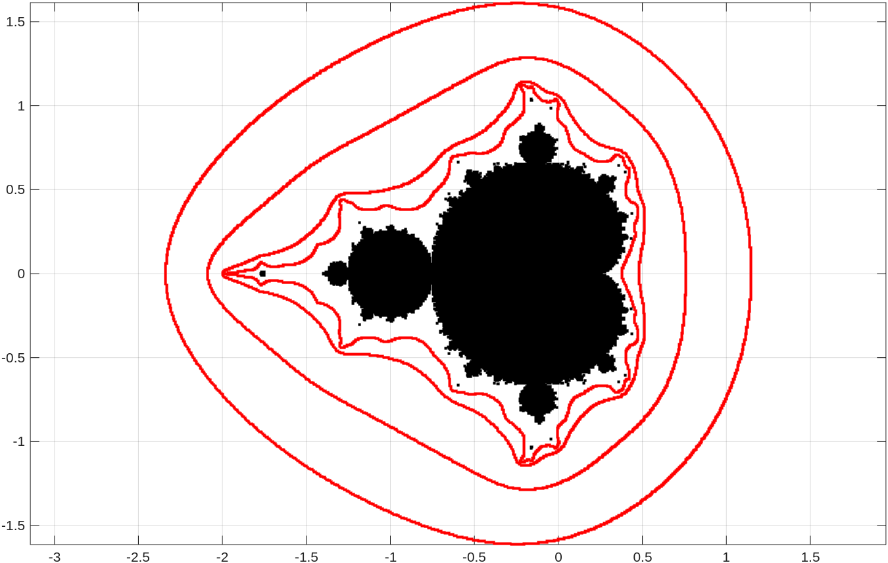
Example: We draw the equipotential lines \(\Gamma_M(e^{2^{3-j}})\) for \(j=10,14\) of the Mandelbrot set, and zoom in on a little region.
>> mandelbrot2('Region',[-2 -1 -0.45 0.45],'NbrItr',100, ...
'Levels',[10 14], 'ColLev',{'red'},'Density',300);
Level curve with j = 10 (5518 points)
Level curve with j = 14 (8564 points)
The drawing is completed.
>> hold on
>> axis([-2 -1 -0.43 0.43])
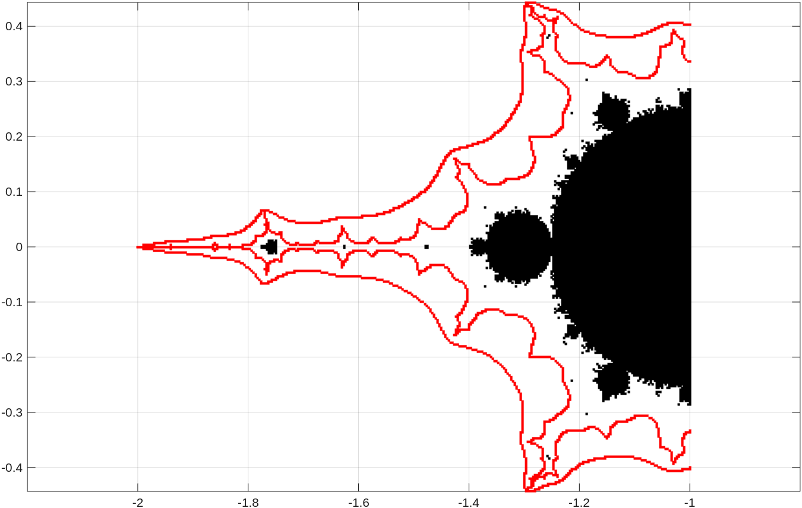
The next Matlab function is limited to the study of the family of rational function \(N_c\) for \(c \in \mathbb{C}\) obtained from the Newton method applied to the polynomial function \(Q_c\) defined by \(Q_c(z) = (z-1)(z-c+1/2)(z+c+1/2)\); namely, \(N_c(z) = z - Q_c(z)/Q_c'(z)\) for \(z\in \mathbb{C}\). The Matlab function mandelbrot3 colours the points \(c\) such that \(\displaystyle \{N_c^n(0)\}_{n>0}\) converges toward a fixed point of \(N_c\); namely, a root of \(P_c\). This Matlab function is used to display little Mandelbrot sets inside the parameter space of \(N_c\) as explained in the section . The code of the Matlab function mandelbrot3 is found in the m-file . We give below only the instructions for this function.
>> help mandelbrot3
function mandelbrot3(options)
Let N_c(z) = z - Q_c(z)/Q_c'(z) where Q_c(z) = (z-1)(z-c+1/2)(z+c+1/2).
Namely, N_c(z) = (-8 z^3 + 4 c^2 -1)/(-12 z^2 + 4 c^2 + 3)
To colour the points c such that { N_c^n(0) }_{n>0} converges
toward one of the fixed points of N_c; namely,
one of r_1 = 1, r_2 = -c-1/2 or r_3 = c-1/2.
List of options:
'Region' is an array of the form [a b c d]. The Mandelbrot set
in the region [a,b] x [c,d] is displayed. The default
region is [-2,2]x[-2,2].
'Density' is a positive integer. This the number of points per unit.
The default value is 100.
'NbrItr' is a positive integer number. This is the number of
iterations used to determine if the orbit
{N_c^n(0)}_{n>0} converges to one of the fixed points
of N_c. The default value is 100.
'Tol" is a real number. This is the accuracy used to determine
if an orbit has converged to a fixed point of M_c.
The default value is 10^(-3).
'Colour' is the colour to draw the points c such that
the orbit { N_c^n(0)}_{n>0} does not converge to one of
the fixed points of N_c. The default colour is black.
'ColPts' is a cell array of the form {'col1' ,'col2', ... } where
col1, col2, ... are colours allowed by Matlab. These
colours are used to colour the points c such that
the orbit { N_c^n(0)}_{n>0} converges to one of
the fixed points of N_c. If there are 2 colours,
the colours are reused. If there are more than 3
colours, only the first three colours are used.
If there is only one colour, different intensities of this
colour are used. The default is to use the colour
for the Mandelbrot set.
Example: We draw a small section of the parameter space of \(N_c\) that contains a Mandelbrot set.
>> mandelbrot3('Region',[-0.03 0.03 0.26 0.35],'NbrItr',30, ...
'ColPts',{'red','blue','green'},'Density',4000,'Colour','black');
The drawing is completed.

We zoom in on the region around the little Mandelbrot set.
>> mandelbrot3('Region',[-0.01 0.01 0.32 0.34],'NbrItr',70,...
'ColPts',{'red','blue','green'},'Density',1200,'Colour','black');
The drawing is completed.
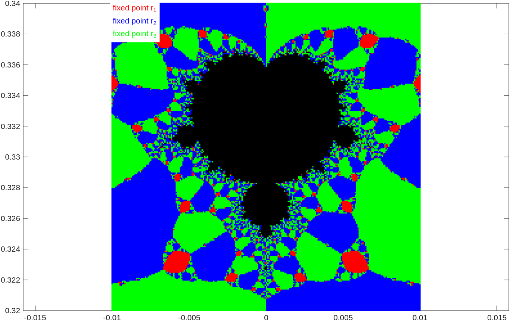
What figure will we get after executing the following Matlab command to zoom in on another region of the parameter space of \(N_c\)?
>> mandelbrot3('Region',[-0.007 0.007 0.501 0.514],'NbrItr',80, ...
'ColPts',{'red','blue','green'},'Density',16000,'Colour','black');
Exporting Arrays to LaTeX
We often have to export large arrays of data in Matlab to tables in LaTeX in order to include them in documents. This also often requires adding a caption and a header to each column. We have created the function array2LTX to do that. The code for this function can be found in the m-file .
>> help array2LTX
array2LTX(filename, matrix, options)
Produce LaTeX tables or longtables from an m x n matrix, where
the columns used from the matrix are given in the vector cols.
filename is the name of the file where the output will be written.
matrix is the matlab array.
List of options.
'cols' is the list of columns of the given matrix that will
be used to generate the LaTeX table. The columns numbers given
in cols must be between 1 and n inclusively. The default is
all columns in the regular order.
'nbr' is the number of tables that will appear side by side with at must
m/nbr lines and at least floor(m/nbr) lines per table.
The default is one.
'lgTable' is an integer. If lgTable = 0, the table environment is used.
If lgTable <> 0, the longtable environment is used. The default
is lgTable = 0. Do not forget that LaTeX may have to be run
several times to produce the correct longtable.
'caption' is the caption of the table.
'label' is the label that should be given to the table or longtable.
There should be a caption to have a label.
'format' is the format of the numbers to be printed. The default is
$%.8f$. Do not forget the symbol $ for the math mode in LaTeX.
The format is the normal format used for fprintf in C.
'firsthead' is the list of headers for each column of the table.
It should be of the form ["head1","head2",...,"headk"]
where k = length(cols). The quotation marks cannot be
replaced by apostropies. If k <> length(cols), the columns
do not get any headers
'secondhead' is the list of headers for each column of the
second table in a longtable environment.
If secondhead is empty or length(secondhead) <> length(cols),
the content of firsthead is used for the second table.
If the table is too long for one page, it is also possible to use the LaTeX package longtable to generate the table. We assume that the reader knows how to write documents in LaTeX.
Example: We generate a large matrix of random numbers between 0 and 100, and export its first, third and fifth column to a table in LaTeX. We use the package longtable because the table is too long for a single page.
>> X = randi(100,200,5); >> size(X)
ans = 200 5 >> array2LTX('table.tex',X,'firsthead',["C1","C2","C5"],'cols',[1 2 5],'secondhead', ["C1","C2","C5"],... 'lgTable',1,'nbr',3,'caption','Random Numbers','label','randNbr','format','$%d$')
The first lines of the file table.tex generated by array2LTX are listed below.
\begin{center}
\setlongtables
\begin{longtable}{|c|c|c|c|c|c|c|c|c|c|c|}
\caption{Random Numbers}\label{randNbr}\\
\cline{1-3}\cline{5-7}\cline{9-11}
C1 & C2 & C5 & & C1 & C2 & C5 & & C1 & C2 & C5 \\
\cline{1-3}\cline{5-7}\cline{9-11}
\endfirsthead
\multicolumn{11}{l}{\small Continued from previous page.} \\
\cline{1-3} \cline{5-7} \cline{9-11}
C1 & C2 & C5 & & C1 & C2 & C5 & & C1 & C2 & C5 \\
\cline{1-3} \cline{5-7} \cline{9-11}
\endhead
\cline{1-3}\cline{5-7}\cline{9-11}
\multicolumn{11}{r}{\small Continued on next page.} \\
\endfoot
\cline{1-3}\cline{5-7}\cline{9-11}
\endlastfoot
$2$ & $15$ & $40$ & & $89$ & $60$ & $49$ & & $51$ & $51$ & $94$ \\
$66$ & $87$ & $25$ & & $50$ & $55$ & $12$ & & $68$ & $30$ & $3$ \\
$40$ & $33$ & $14$ & & $32$ & $68$ & $17$ & & $2$ & $30$ & $19$ \\
$43$ & $77$ & $83$ & & $35$ & $34$ & $17$ & & $74$ & $93$ & $43$ \\
...
The pdf file obtained from a LaTeX document that contains this table is displayed below.
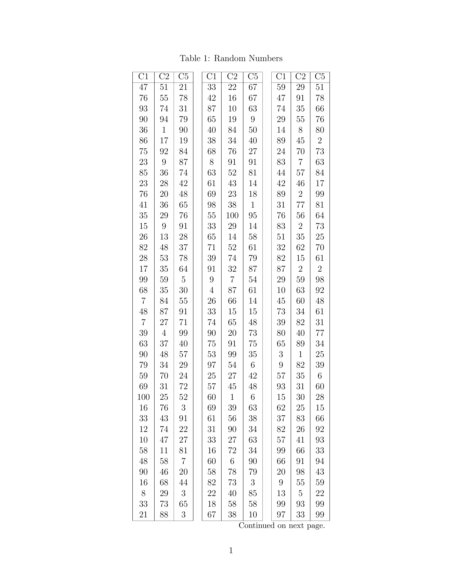
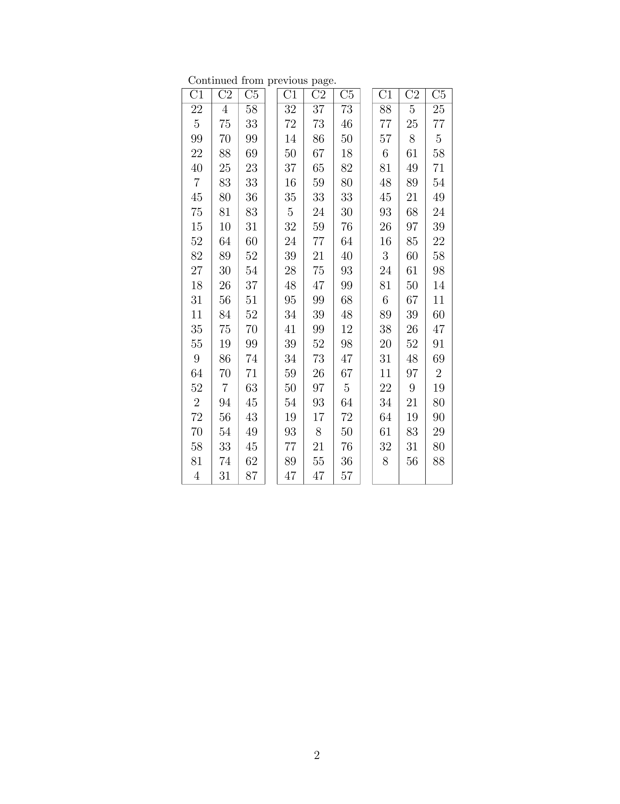
Remark: The reader is welcome to modify the function array2LTX to change the look of the tables generated by this function. In fact, it would be interesting to add some options to the function array2LTX to format the look of the tables that it generates.